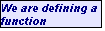
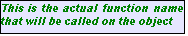
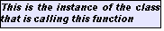
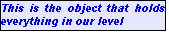
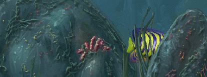

Torque 2D - Fish Demo Tutorial - Part 4
4. Making our Fish Swim
To make our fish swim we need to add some script. To do this, browse out to your project folder, wherever you created it, and then to the gameScripts folder, MyFishDemo/game/gameScripts/. In this folder you should see a game.cs file. The ".cs" extension means it's a TorqueScript file. Open up the file in any text editor (Windows users can right click and choose Open With and use Notepad or Wordpad (be sure not to use Microsoft Word); Mac users can control click and choose Open With and use TextEdit). You should see the following data in your game.cs.
//---------------------------------------------------------------------------------------------
// Torque 2D
// Copyright (C) GarageGames.com, Inc.
//---------------------------------------------------------------------------------------------
//---------------------------------------------------------------------------------------------
// startGame
// All game logic should be set up here. This will be called by the Scene Editor when you
// select "Run Game" or by the startup process of your game to load the first scene.
//---------------------------------------------------------------------------------------------
function startGame(%level)
{
// Set The GUI.
Canvas.setContent(mainScreenGui);
Canvas.setCursor(DefaultCursor);
moveMap.push();
if( isFile( %level ) || isFile( %level @ ".dso"))
sceneWindow2D.loadLevel(%level);
}
//---------------------------------------------------------------------------------------------
// endGame
// Game cleanup should be done here.
//---------------------------------------------------------------------------------------------
function endGame()
{
sceneWindow2D.endLevel();
moveMap.pop();
}
This script file has some of the base functions that are called when we test our scene from the Scene Editor. When you click the Play button, the startGame() function is called. What we need is a way to integrate our object from the Scene Editor with our scripts in this file. We can do this with what we call script classes. We create a class for our fish and then assign it to our fish object, in our level. Once our fish is in that class, it then will automatically get a specific function called whenever our fish is loaded into the level (which happens when we play our level). This function is appropriately called "onLevelLoaded". Add this function to the end of your game.cs file (right after the end of the endGame function).
function FishClass::onLevelLoaded(%this, %scenegraph)
{
}
Code Sample 4.1.1
Now as you may notice, we start with the keyword function, which tells T2D that we are beginning a function declaration. Then we follow with our class name FishClass. This means that this function will be attached to the FishClass class, and since our fish will be using the FishClass class, our fish will have access to this function. Then we get to the actual function name (onLevelLoaded()) which you might have guessed gets called when our fish gets loaded into the scene. After the function name we have two comma-separated values inside of parentheses. These are values that will be passed to this function, and which could be useful. The %this value represents the object that this function is being called on. That value is useful when we have multiple objects using the same class. It represents the specific instance of the class calling this function. The %scenegraph value is useful as well, since it represents our scene object. Everything in our scene is inside of the scenegraph object. Here is a breakdown of what our function script means.

 

function FishClass::onLevelLoaded(%this, %scenegraph)
{
}
In this onLevelLoaded() function we're going to get our fish to start moving. To do this, we can place a call to set its velocity along the X axis. So make your onLevelLoaded() function look like this.
function FishClass::onLevelLoaded(%this, %scenegraph)
{
%this.setLinearVelocityX(20);
}
Code Sample 4.1.2
Be sure to save your game.cs script
file. Now our final step is to set our fish's class in our scene. That way this
script is triggered upon loading.
Setting our fish's class
Set the fish's class to "FishClass".
Now we should be able to test our scene. Save the scene. Then Play the scene.
After pressing the play button you should see your fish go between the rock layers (as shown in Figure 4.2.5), and swim off of the right side of the screen.

Figure 4.2.5